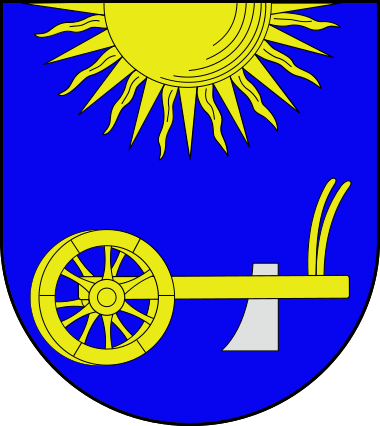
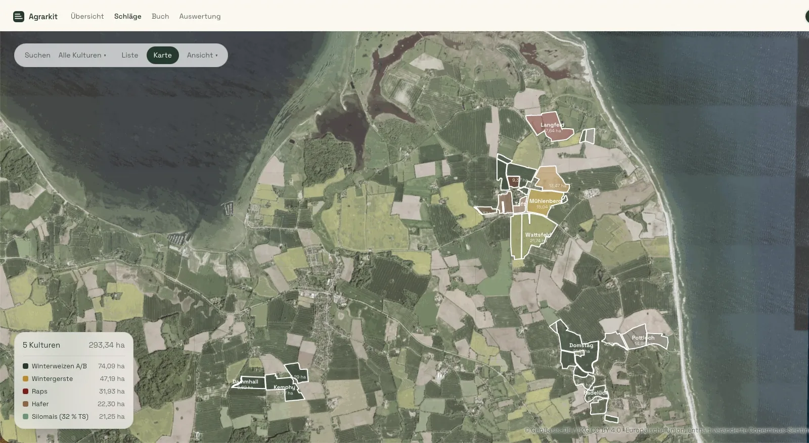
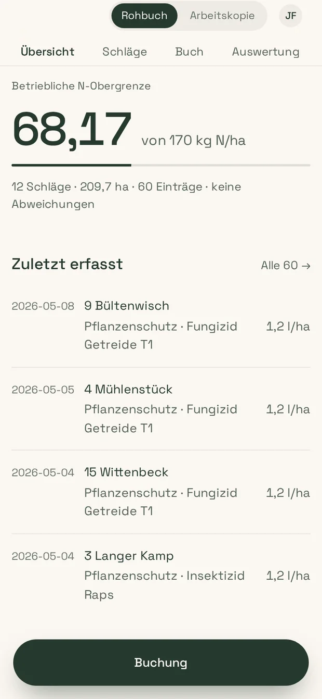
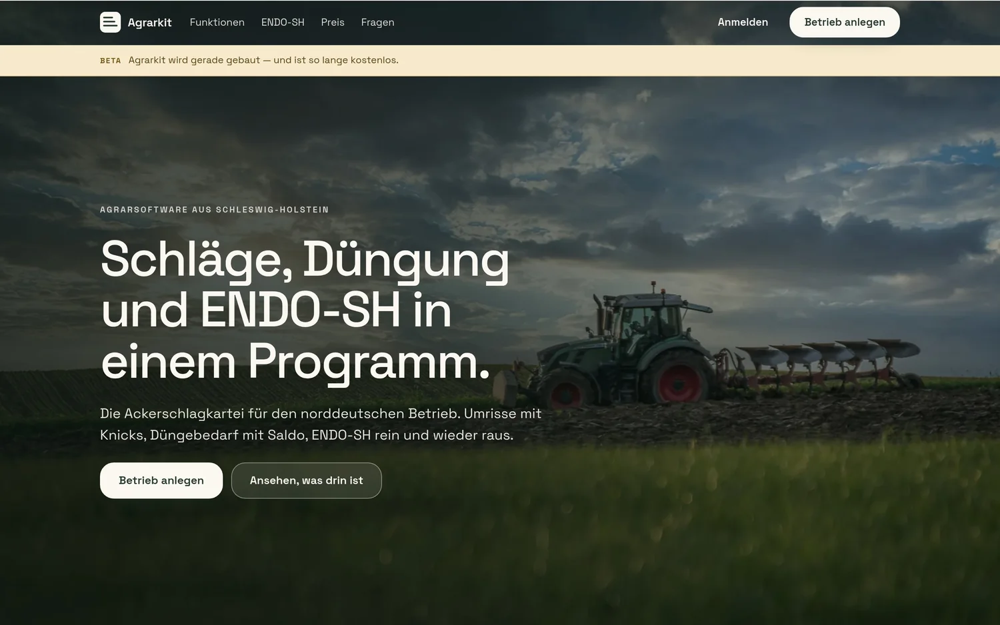
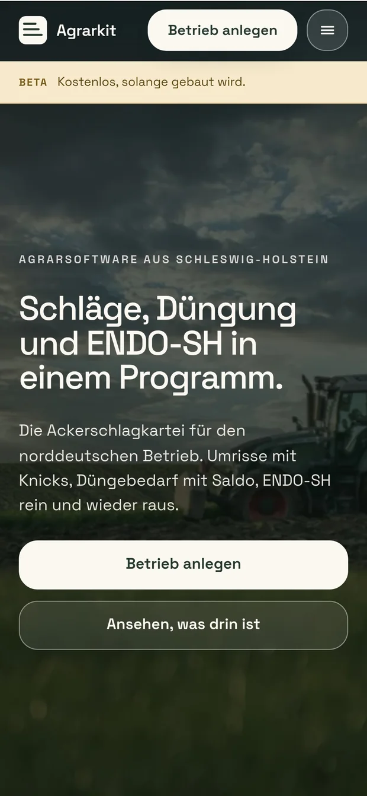

„Ich hab ein konkretes Problem.“
Die Website ist zu alt. Keiner kommt mehr ins Instagram-Konto rein. Das neue Projekt soll auf Social Media. Es sollen mehr Azubis kommen.
Sag mir kurz, was das Problem ist, und wir arbeiten an einer Lösung.
Angeln · Flensburg · Kappeln · Schleswig
Videos, Website, Social Media und der ganze Computerkram für alles, was hier in Angeln zwischen Flensburg, Kappeln und Schleswig aufmacht, anpackt und Gäste hat.
Kostet nichts und verpflichtet zu nichts. Auch wenn du noch gar nicht weißt, was du willst.
Zuverlässigkeit steht an erster Stelle.
0151 5122 3742Meistens meld ich mich am selben Tag. Wenn ich nicht rangehe, ruf ich zurück. Kein Ticket, keine Warteschleife.
Gearbeitet für

Der erste Anruf
Je nachdem, wie es bei dir aussieht.
Die Website ist zu alt. Keiner kommt mehr ins Instagram-Konto rein. Das neue Projekt soll auf Social Media. Es sollen mehr Azubis kommen.
Sag mir kurz, was das Problem ist, und wir arbeiten an einer Lösung.
Du hörst überall, dass man online was machen sollte, weißt aber nicht was. Und ehrlich gesagt hast du auch keine Zeit, dich da reinzudenken.
Dann komm ich vorbei, guck mir an, wie ihr arbeitet, und sag dir hinterher, was sich für euch lohnt. Und was nicht.
Leistungen
Falls du wissen willst, wofür man mich überhaupt anrufen kann.
Ein längerer Imagefilm, der zeigt, wie es bei euch aussieht und wer da arbeitet. Oder kurze Sachen fürs Handy.
Neu bauen, wenn keine da ist. Oder die alte in Ordnung bringen. Wenn du willst, halt ich sie danach aktuell.
Einrichten, bespielen, oder dir zeigen, wie du es selber machst. Je nachdem, wie viel Zeit und Lust du hast.
Dass an einer Stelle steht, was ansteht und was der Stand ist. Damit nichts mehr in zwanzig Chats verloren geht.
Google-Eintrag, E-Mail-Adressen, QR-Codes, Fotos. Immer wenn etwas Digitales nicht läuft.
Wenn es das, was ihr braucht, nirgends fertig zu kaufen gibt. Siehe Agrarkit weiter unten.
Arbeitsproben
Alles hier aus der Gegend.
Gemeinde Gelting
Zeigen, was in einer Gemeinde klappen kann, wenn man zusammenarbeitet.
Petersens Ferienwohnungen
Fotos zeigen das Zimmer. Ein Film zeigt, wie die Besitzer ticken.
„Das ging ja schnell! Mega! Vielen Dank für deine tolle Arbeit!“
Petersens Ferienwohnungen
Lasse.PTS
Hochkant, schnell geschnitten, für Instagram und TikTok.
„Ah geil. Find ich super. Poste ich heute direkt mal 👍“
Lasse.PTS


Agrarkit · eigene Entwicklung
Jeder Landwirt muss dem Land melden, was er wann auf welchem Feld gemacht hat. Die fertigen Programme dafür sind teuer und passen selten hierher. Also hab ich es selbst gebaut — am Rechner und am Feldrand aufm Handy.
So weit gehe ich, wenn es etwas nicht fertig zu kaufen gibt.


agrarkit.de · eigene Entwicklung
Oben in einem Satz, worum es geht. Darunter der Reihe nach die Fragen, die die Leute wirklich stellen. Und ganz unten, wie man mich erreicht. So eine Seite bau ich dir genauso.
Platzhalter: Name · Kommunalpolitik
Eine Website, Banner für die Straße und die Konten, über die man ihn erreicht. Der Vorteil, wenn das einer macht: Wer das Banner an der Landstraße sieht und danach die Seite aufmacht, erkennt sofort, dass das zusammengehört.
Über mich
Ich wohne schon mein ganzes Leben in Angeln. Die Leute, für die ich arbeite, kenn ich zum Teil, seit ich klein bin.
Mir ist irgendwann aufgefallen: Hier machen richtig viele Leute richtig gute Sachen, und im Internet findet man nichts davon. Nicht weil sie schlecht sind, sondern weil abends um acht keiner mehr Lust hat, sich um sowas zu kümmern. Verständlich.
Womit ich es selber genau nehme: zurückrufen, Termine halten, Bescheid sagen, wenn was nicht klappt. Klingt selbstverständlich. Ist es aber nicht immer und deshalb schreib ich es hier hin, damit du mich daran messen kannst.
Ich bin jung genug, dass mir der ganze digitale Kram leichtfällt, und ich bin von hier. Man kann mich einfach anrufen und fragen. Auch wenn es am Ende nur zwei Minuten dauert.
Kontakt
Am besten kurz durchklingeln. Wenn ich gerade nicht rangehe, ruf ich zurück.
0151 5122 3742Du musst dir vorher nichts überlegen. „Wir müssten mal was machen, weiß aber nicht was“ reicht als Einstieg völlig.